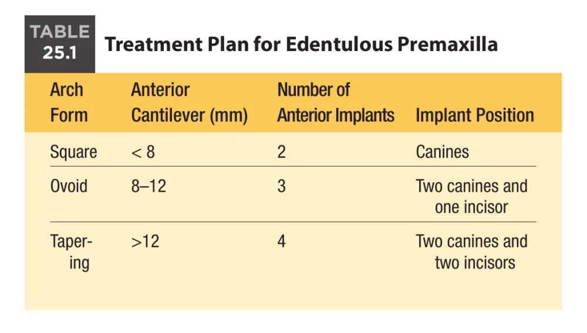
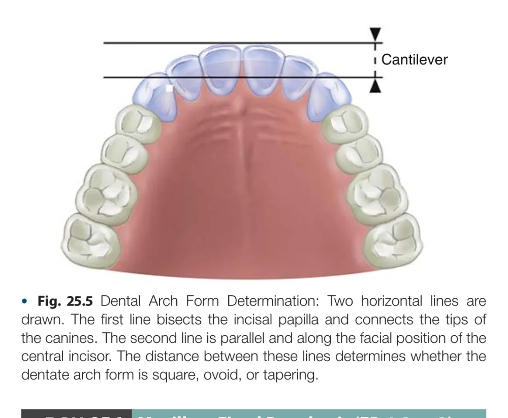
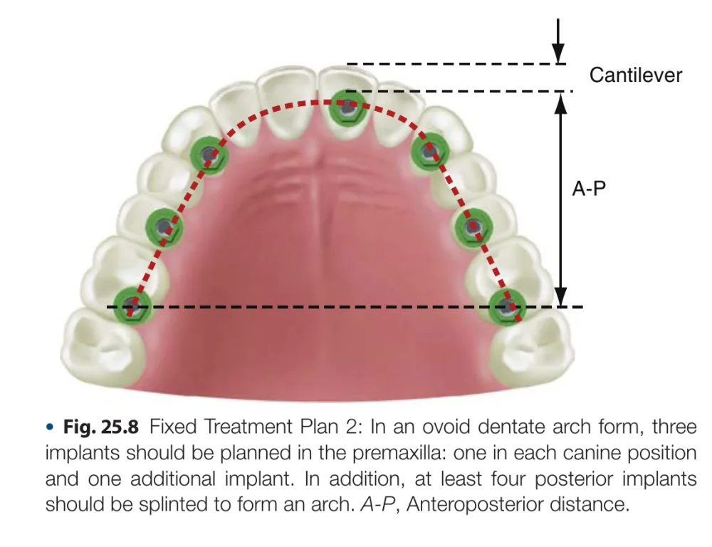

نسخه استخراجشده؛ ترجمه یا تأیید علمی انجام نشده است. وضعیت: captured
نخست یک واقعیت آماری: مرور ادبیات نشان میدهد پروتزهای ثابت کامل ایمپلنتساپورت ماگزیلا بهطور میانگین روی شش ایمپلنت با قطر استاندارد با کانتیلورهای مولر خلفی ساخته میشوند. و اخیراً مقالات متعددی موفقیت پروتز ثابت روی چهار ایمپلنت را نشان دادهاند.
اما هشدار پابرجاست: «ماگزیلای بیدندان نشان داده شده که کمترین بقای ایمپلنت را برای ترمیمهای ثابت یا متحرک در مقایسه با پروتزهای مندیبل دارد. همهی گزارشها با این یافته همرأیاند که استخوان ماگزیلا معمولاً کیفیت و حجم ضعیفتری دارد و چند عیب بیومکانیکی ارائه میکند.»
و راهبرد جبران دو بخش دارد: «برای جبران شرایط موضعی ضعیف، باید شمار بیشتری ایمپلنت برنامهریزی شود، همراه با فاصلهی قدامی-خلفی (A-P) بیشتر.»
حالا چهار اصل بنیادی که کل بقیهی این یونیت روی آنها ساخته میشود:
اصل چهارم را دستکم نگیر: این یعنی وقتی RP-4 برنامهریزی میکنی، همهی جدولها و قواعد این درس عیناً به کار میروند. تفاوت RP-4 با ثابت در برداشتنی بودن است، نه در بیومکانیک.
و اکنون اصل دوم — که ظریفترینشان است.
سه فرم قوس دندانی رایج برای ماگزیلا وجود دارد: مربعی، بیضی و مخروطی (تیپرد).
و مسئله این است: «در نتیجهی تحلیل استخوان، فرم قوس ریج بیدندان معمولاً با فرم قوس دنداندار متفاوت خواهد بود.»
یک مثال روشن: «یک ریج باقیمانده ممکن است بهدلیل تحلیل یا تروما مربعی به نظر برسد. اما موقعیت نهایی دندانها ممکن است لازم باشد با پروتز نهایی بهسمت فاسیال کانتیلور شود. به بیان دیگر، ممکن است برای بازسازی یک ریج بیدندان مربعی، به یک فرم قوس دندانی بیضی نیاز باشد.»
و نتیجهگیری صریح: «شمار و موقعیت ایمپلنتها به فرم قوس دنتیشن نهایی (پروتز) مربوط است، نه به فرم قوس بیدندان موجود.»
و چگونه فرم قوس دندانی را اندازه بگیریم؟ (شکل ۲۵٫۵)
دو خط افقی رسم میشود:
و فاصلهی میان این دو خط، فرم قوس را تعیین میکند — همان چیزی که جدول ۲۵٫۱ آن را به شمار ایمپلنت ترجمه میکند:
جدول ۲۵٫۱ — طرح درمان کانتیلور پرهماگزیلای بیدندان:
مربعی — کانتیلور قدامی کمتر از ۸ میلیمتر — ۲ ایمپلنت قدامی — موقعیت: کانینها
بیضی — کانتیلور ۸ تا ۱۲ میلیمتر — ۳ ایمپلنت — موقعیت: دو کانین و یک انسیزور
مخروطی — کانتیلور بیش از ۱۲ میلیمتر — ۴ ایمپلنت — موقعیت: دو کانین و دو انسیزور
و یک نکتهی فراوانی که در عمل مهم است: فاصلهی ۸ تا ۱۲ میلیمتر، یعنی فرم قوس دنداندار بیضی، «شایعترین فرم مشاهدهشده» است. یعنی ردیف میانی، ردیف معمول است نه ردیف مرزی — و برنامهی درمانی متناظرش را احتمالاً بیش از بقیه به کار خواهی برد.
الگو روشن است: هرچه کانتیلور قدامی بلندتر، ایمپلنت قدامی بیشتر. و این یک قاعدهی اهرمی است، نه یک قرارداد.


برنامهی درمانی ثابت ۱ — فرم قوس مربعی.
در یک نگاه: اندیکاسیون فرم قوس مربعی، ۶ ایمپلنت، موقعیتها (دوطرفه): کانین، بایکاسپید دوم (پرمولر دوم)، مولر اول.
و شرط استفاده: «وقتی عوامل نیرو پایین باشند، یک فرم قوس دنداندار مربعی میتواند از شش ایمپلنت برای پروتز ثابت یا RP-4 استفاده کند.» — پس شش ایمپلنت، سقف نیست؛ کف در شرایط مساعد است.
چرا مربعی کمترین ایمپلنت قدامی را میخواهد؟ چون از جدول فرم قوس میدانی کانتیلور قدامی در قوس مربعی کمتر از ۸ میلیمتر است — یعنی دندانهای قدامی تقریباً روی خود ریج مینشینند و اهرم قدامی کوچک است. دو ایمپلنت کانین کافی است.
و منطق دقیق پشت شش ایمپلنت — نه فقط عدد:
«در یک فرم قوس دندانی مربعی، انسیزورهای لترال و مرکزی بهطور حداقلی از موقعیت کانین بهسمت فاسیال کانتیلور میشوند، که به نیاز کمتر به ایمپلنت در موقعیت مرکزی یا لترال میانجامد.»
و اثر بیومکانیکیاش: «وقتی برنامهی درمانی ۱ به کار میرود، اکسکورسیونهای مندیبل و نیروهای اکلوزالی تنش کمتری بر ایمپلنتهای کانین وارد میکنند. در نتیجه، ایمپلنتهایی در موقعیت کانین برای جایگزینی شش دندان قدامی ممکن است کافی باشند — به دو شرط: عوامل نیرو پایین باشند و به ایمپلنتهای خلفی اضافی اسپلینت شوند.»
و نمونهی بالینیاش: یک پروتز FP-3 ماگزیلا که «از یک فرم قوس دنداندار مربعی پیروی میکند و بنابراین با شش ایمپلنت — کانینها، پرمولرهای دوم و مولرهای اول — پشتیبانی میشود. بهدلیل فرم قوس مربعی، کانتیلور حداقلی نتیجه میشود.»
به این رابطه دقت کن: فرم قوس مربعی نهتنها ایمپلنت قدامی کمتری میطلبد، بلکه کانتیلور کمتری هم میسازد. این دو مستقل نیستند — هر دو از همان «کانتیلور قدامی کمتر از ۸ میلیمتر» بیرون میآیند. یک اندازهگیری، دو پیامد.
برنامهی درمانی ثابت ۲ — فرم قوس بیضی.
در یک نگاه: اندیکاسیون فرم قوس بیضی، ۷ ایمپلنت، موقعیتها: انسیزور مرکزی (یکطرفه)، کانین (دوطرفه)، بایکاسپید دوم (دوطرفه)، مولر اول (دوطرفه).
به قید «یکطرفه» برای انسیزور مرکزی دقت کن — این همان ایمپلنت هفتم است. جدول فرم قوس برای قوس بیضی سه ایمپلنت قدامی میخواهد: دو کانین و یک انسیزور. عدد فرد، نه زوج.
و کپشن شکل ۲۵٫۸ همین را میگوید: «در فرم قوس دنداندار بیضی، سه ایمپلنت باید در پرهماگزیلا برنامهریزی شوند: یکی در هر موقعیت کانین و یک ایمپلنت اضافی. افزون بر آن، دستکم چهار ایمپلنت خلفی باید اسپلینت شوند تا یک قوس تشکیل دهند.»
و چرا ایمپلنت سوم قدامی اینقدر ارزش دارد؟ سه سود جداگانه دارد:
«موقعیت انسیزور مرکزی فاصلهی A-P را از کانین تا مرکزی افزایش میدهد و پشتیبانی بیومکانیکی بهبودیافتهای به پروتز میدهد.» و سه موقعیت ایمپلنت در پرهماگزیلا:
و یک انعطاف بالینی که باید بدانی: «وقتی عوامل نیروی بیمار پایین تا متوسط باشند، ایمپلنت قدامی میتواند در محل انسیزور لترال قرار گیرد، اگر محل مرکزی ایدهآل نباشد.» — یعنی موقعیت مرکزی ترجیح است، نه الزام.
و یک هشدار مهم دربارهی برنامهی ۲: «در ماگزیلاهای بیدندانِ درازمدت با آتروفی معنادار، برنامهی درمانی ۲ به احتمال زیاد پیش از جایگذاری ایمپلنت به اگمنتاسیون استخوان نیاز خواهد داشت.» — پس هفت ایمپلنت یک تصمیم پروتزی است که میتواند یک پیشنیاز جراحی بسازد.
و اکنون موقعیتدهی ایدهآل هفتایمپلنتی که استاندارد به شمار میرود:
و یک نکتهی ظریف دربارهی موقعیت مولر: دقت کن: «نیمهی دیستال مولر اول»، نه صرفاً «مولر اول». این یعنی ایمپلنت تا حد ممکن دیستالی میرود تا A-P spread را ببرد بالا.
و چرا این چیدمان؟ دو دلیل:
دلیل یکم — فضا برای قطر بیشتر: «این موقعیتهای ایمپلنت فضای کافی میان هر ایمپلنت ایجاد میکنند تا قطرهای بزرگتر ایمپلنت ممکن شود — یعنی وقتی برای عوامل نیرو یا تراکم استخوان لازم باشد.»
دلیل دوم — قاعدهی فاصله: «ایمپلنتها باید در حالت ایدهآل پس از جایگذاری دستکم ۳ میلیمتر از هم فاصله داشته باشند.»
و الزام اسپلینت: «هفت ایمپلنت باید به هم اسپلینت شوند تا بهعنوان یک قوس عمل کنند.» — برخلاف مندیبل که خمش و تورشن، اسپلینت سرتاسری را محدود میکرد، در ماگزیلا اسپلینت قوسی سرتاسری خودِ راهبرد است. ماگزیلا خم نمیشود؛ ضعیف است. و پاسخ به ضعف، اتصال است.
